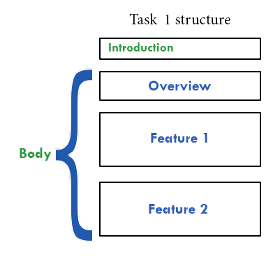
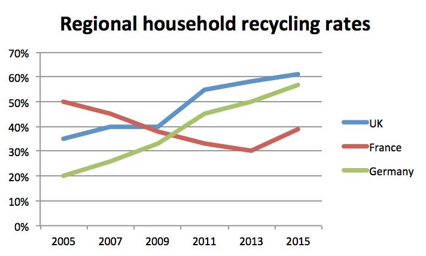

How to answer IELTS Academic Writing task 1?

In this lesson we're going to learn how to give a band 9 answer for IELTS Academic Writing task 1.
To get the highest score, you should follow this answer structure:
- Introduction
- General overview
- Specific features
Now we'll consider each part of the answer.
As an example, let's take a look at the given topic:
The line graph below shows the household recycling rates in three different
countries between 2005 and 2015.
Summarise the information by selecting and reporting the main
features, and make comparisons where relevant.

1. Introduction
The first paragraph you need to write is your introduction. For the introduction you need simply to paraphrase the information from your topic (make sure that you mention what your graph shows and for what period of time). It shouldn't be longer that 2 sentences.
And this is a possible way to write your introduction:
The line graph illustrates the regional household recycling rates in the UK, France and Germany from 2005 to 2015.
2. Overview
When giving a general overview, you shouldn’t state any specific details, you should simply write what’s happening on the graph overall.
It's a good technique to write 'Overall,' before giving an overview.
In this example it could be done as follows:Overall, the recycling rates of the UK and Germany showed a steady but significant rise over the period, while the percentage of recycled waste in France experienced a downward trend.
Basically, you’re saying that UK and Germany’s rates ↑ , France’s rates ↓ . It's very important to give an overview, your essay will score much lower without it!
3. Specific features
After you've given the overview, you should group data by some feature and give specific details. In this line graph you can group data in two ways:
- by country
- by similar trend
Describe each country’s recycling rates in a separate paragraph
As you can see, the UK and Germany followed a similar trend: their recycling rates were increasing
throughout
the period, while recycling rates of France experienced a fall.
So you can describe an “increase pattern” in the first paragraph and a “decrease pattern” in the second
paragraph.
The last option is better. Here's an example of providing specific data:
In 2005 the recycling rates of the UK and Germany were nearly 35% and 20% respectively. Germany's rate increased sharply throughout the period, exceeding France's rate in 2009 and reaching almost 60% in the end of the period. In the meantime, the percentage of recycled waste in the UK grew to 40% in 2007, and then remained steady until 2009. During 2009-2011 it experienced a rapid surge to more than 50% and continued with a gradual increase to 60% in 2015.
In early 2005 the recycling rate of France (50%) was the highest among these three countries. However, it dramatically declined to 30% in 2013. Then, there was a growth of 10% in 2015, but France's recycling rate was the lowest in the end of the period.
And don't forget that you should never write a conclusion in Writing task 1 as you're not giving your opinion, you're just describing the data.